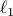
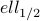
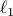
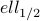

Yaohua Hu - Software
LpRGNI (Lp Regularization for Gene Network Inference)
An Matlab tool for predicting gene regulatory network by using the LASSO-type estimators, including the
 ,  and  regularization models, and from both high-throughput gene expression data and transcription factor.
,  and  regularization models, and from both high-throughput gene expression data and transcription factor.Reference:
- J. Qin, Y. Hu, F. Xu, H. K. Yalamanchili and J. Wang, Inferring gene regulatory networks by integrating ChIP-seq/chip and transcriptome data via LASSO-type regularization methods, Methods, 67: 294-303, 2014. [link]
GSparO (Group Sparse Optimization)
An R pacakage for solving underdetermined linear system. It implements the proximal gradient algorithm to solve a lower regularization model of group sparse learning.
Reference:
- Y. Hu, C. Li, K. Meng, J. Qin and X. Yang, Group sparse optimization via regularization, Journal of Machine Learning Research, 18(30): 1-52, 2017. [link]
CrusTF
A comprehensive resource for evolutionary and functional studies of crustacean transcription factors.
Reference:
- J. Qin, Y. Hu, K. Ma, X. Jiang, C. Ho, L. Tsang, L. Yi and K. Chu, CrusTF: A comprehensive resource for evolutionary and functional studies of crustacean transcription factors, BMC Genomics, 18(1): 908, 2017. [link]